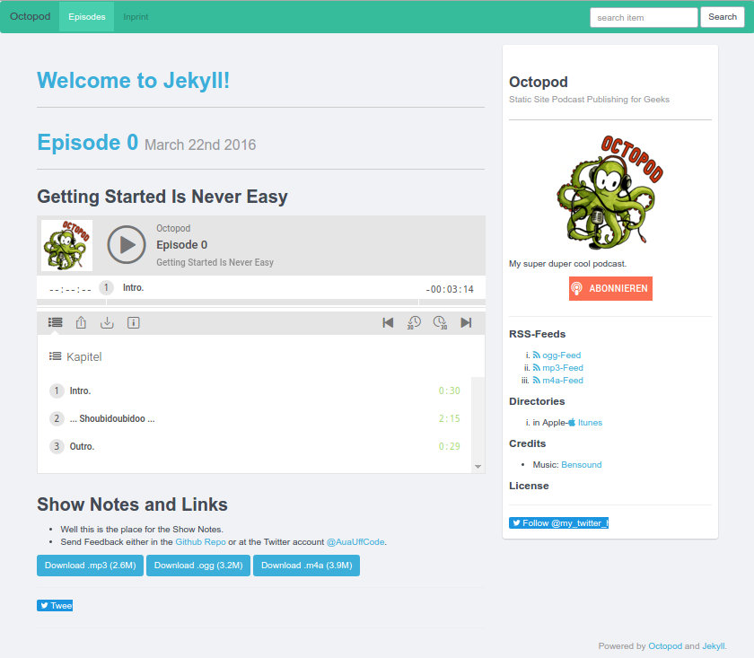

jekyll-octopod

A podcast publishing extension for the static site generator Jekyll
tl;dr
You generate a static web site for your podcast on your own computer, test drive it and sync it to your web space.
No Wordpress, PHP, Ruby other scripting language, database management system or any other dynamic component is needed on your server. This increases security immensely.
Tell me more!
If you want to take a look: See (and listen to) Stefan’s podcast Aua-Uff-Code!.
The page you will get when you follow the installation instructions looks like this one:

Technically speaking, jekyll-octopod is a Jekyll plugin and a Ruby Gem. It contains of scripts, templates, helpers and extensions to publish your podcasts in the cool text file lover’s way.
If you are not afraid of the command line on your computer and text files are the stuff that heat up your geeky little heart, jekyll-octopod may be worth a trial to publish your podcasts.
The underlying assumptions of jekyll-octopod are that static content should be delivered statically and text files are the perfect way to handle podcast metadata. Jekyll-octopod makes it easy to generate and deploy a website with feeds for your podcast out of one textfile and at least one audio file per episode.
Features
jekyll-octopod brings innately:
- iTunes-ready paged episode feeds for different file formats (e.g. mp3, ogg, m4a)
- a ready to use Bootflat and Twitter Bootstrap-based, responsive (i.e. mobile friendly) layout modifiable to your heart’s desire.
- Flattr support on the website and in the episode feed.
- Twitter integration on the website.
- comments via Disqus.
- Podlove Web Player in it’s current version 3.0.
- Static player pages that are embeddable in iframes for your other or affiliates’ sites.
- Podlove Alternate Feeds.
- Podlove Simple Chapters.
- Podlove Subscribe Button for easy podcast subscription on any operating system, including mobile phones.
- https compatibility.
- Google search integration.
- Easy show notes creation.
Is this production ready?
We use it in production, so we believe it is. But it is very likely, that it still contains bugs. And there is no guarantee that behavior will not change with the next update :-).
Hopefully you are brave enough to play with this cute little toy anyway.
Documentation
Detailed documentation is provided on the folloging pages:
- Prerequisites
- Installation
- Demo
- Usage
- Command Line Tool
- Liquid Filters
- Post structure
- Prerequisites
- Credits
- License
- Code of Conduct
You will find a link to the next page in the suggested reading track at the bottom of each page.
Continue reading with Prerequisites.
Maintainer
Stefan Haslinger stefan.haslinger@informatom.com
Credits go to lots of people and projects.